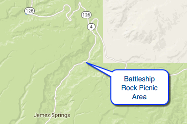
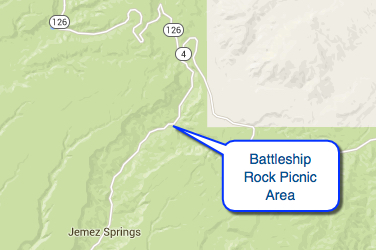

Hike New Mexico
w/ Tom & Ken
Battleship Rock / Macauley Hot Springs
*NOTE: See also the "Jemez East Fork to Battleship Rock" Hike!
| Difficulty | Round-trip | Type | Elev. Chg. | Exposure | Wow Factor | Facilities | Seasons | Photos | By Car |
|---|---|---|---|---|---|---|---|---|---|
| Medium | 4.0 miles | Out-and-back | 500 ft | Sun, some shade | Springs/views | Picnic Area | Not Winter |
 |
 |


 

- Sep 5, 2006: From Battleship Rock trailhead
- Sep 5, 2006: Obsidian everywhere!
- Sep 5, 2006: Battleship from higher on the trail
- May 14, 2010: Warm springs attract all
- Sep 5, 2006: A warm showering falls at Spring2
- May 14, 2010: A third spring downstream
- https://www.flickr.com/photos/139088815@N08/27265957551/in/album-72157669063455305
- https://www.flickr.com/photos/139088815@N08/27061048550/in/album-72157669063455305
- https://www.flickr.com/photos/139088815@N08/27302944856/in/album-72157669063455305
- https://www.flickr.com/photos/139088815@N08/26729856443/in/album-72157669063455305
- https://www.flickr.com/photos/139088815@N08/27238999812/in/album-72157669063455305
- https://www.flickr.com/photos/139088815@N08/27265954781/in/album-72157669063455305
Battleship Rock is a picnic area north of Jemez Springs on Highway 4, which provides access to Forest Trail 137, East Fork Jemez River. The trail proceeds upward about 500 ft and 2 miles to Macauley Warm Springs, the destination for most. It continues past the warm springs to Highway 4 north, near Jemez Falls (See also the "Jemez East Fork to Battleship Rock" hike, link below!). There are actually (now) two warm springs: Update (2016): the upper springs has been bolstered with a rock boundary, allowing the springs to provide a better wading experience. The second springs is intact as it was previously, with a deeper water and running cascades.